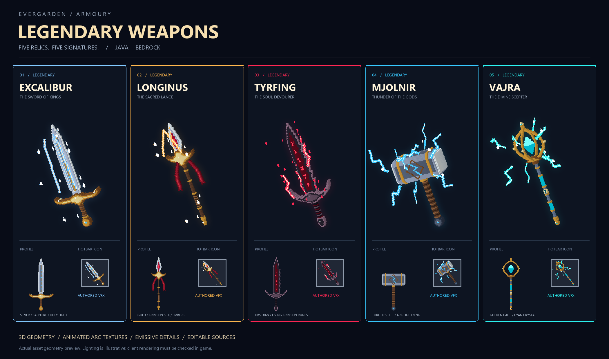
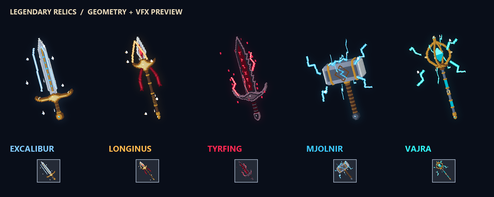

Rendered from the same cuboids and textures exported to the packs. This is an asset preview, not a Minecraft screenshot. Java hotbar icons animate; Bedrock hotbar icons include a static signature effect. Both held models animate their VFX.
Try in game: /magic weapons (admin menu), /magic weapon give mjolnir.